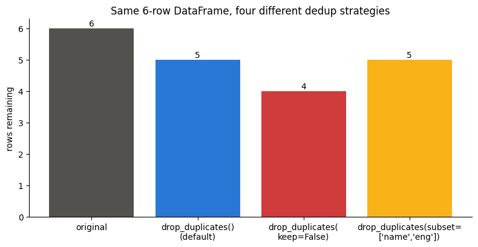
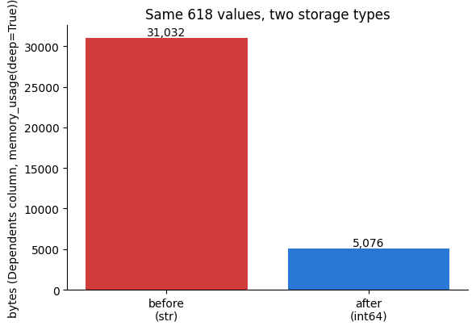

Ramesh exported his sales table twice and appended it to itself by mistake. The model scored 99%.
Every row in the test set also sat in the training set. The model was not predicting — it was reciting rows it had already seen.
Duplication does not look like a bug. It looks like success.
The second defect is quieter still: a price column loaded as text. df['price'].mean() then either crashes or glues strings together. Both are caught by looking at .info() and .duplicated() before modelling.
🔑 The one idea
A duplicate row leaks between train and test. A number stored as text silently disables arithmetic.
04_Data_Cleaning.MD names this as sub-skill #5 — genuinely new ground,
not covered by any earlier notebook (06–14 were all about missing
values and outliers, never repeated rows). Its own table draws a sharp
line between two different problems that both get called "duplicates":
Type
What it looks like
Fix
Exact duplicates
Two rows, every column identical
Drop one copy
Near-duplicates
Same real record, different text — "Apple" vs "APPLE "
Normalize first, then compare
Section 1 builds a small 6-row example where both cases are visible at
once. Section 2 runs the exact-duplicate check on the real ../../_shared_data/loans.csv.
Section 3 sanity-checks for near-duplicates too.
codecell 1
import pandas as pd
import matplotlib.pyplot as plt
1. The Mechanics — A Small, Controlled Example
Six students, two subjects. Two rows (0 and 4) are planted as exact
duplicates — same name, same marks in both subjects. Two more (2 and 5)
share a name and an eng score but differ in hindi — a partial
match, not a true duplicate, deliberately included to show how the
subset parameter can get this wrong.
name eng hindi
0 a 8 2
1 b 7 3
2 c 5 4
3 d 8 5
4 a 8 2
5 c 4 6
Row 4 is byte-for-byte identical to row 0 (a, 8, 2) — a
real duplicate. Row 5 looks similar to row 2 (c, 5) but its
hindi score is 6, not 4 — a different record that happens to
share two of three columns. Keep an eye on both as the checks below
run.
duplicated() compares every column and returns one boolean per
row: True if that exact combination already appeared earlier in the
DataFrame. Default behaviour is keep="first" — the first time a
combination shows up it's the original (False); every repeat after that
is flagged (True). Only row 4 comes back True here — it's the only
row that matches an earlier row on all columns. Row 5 stays False,
because hindi breaks the match with row 2.
Same comparison, opposite choice of "which copy is the original."
With keep="last", the last occurrence of a combination is treated as
the one to keep, so now row 0 flips to True and row 4 flips to
False — the pair is the same, only which one counts as "the duplicate"
changed.
keep=False stops picking a "keeper" altogether — every row that
belongs to a duplicate set is marked True, first occurrence included.
Both row 0 and row 4 come back True here; useful when the goal is
"flag anything involved in a duplicate," not "flag the extras."
subset narrows the comparison to just the listed columns. Compared
on name + eng only, row 5 (c, 5) now matches row 2 (c, 5)
— hindi is no longer part of the comparison, so the fact that they
differ there (4 vs 6) is invisible to this check. This is exactly the
risk 04_Data_Cleaning.MD doesn't spell out but implies: narrowing the
subset can turn two genuinely different records into "duplicates."
Now actually removing them — drop_duplicates()
Same three keep choices, but this time returning a filtered DataFrame
instead of a boolean mask.
codecell 14
df.drop_duplicates()
Output
name eng hindi
0 a 8 2
1 b 7 3
2 c 5 4
3 d 8 5
5 c 4 6
Default keep="first": row 4 is gone, the other 5 rows remain —
including both row 2 and row 5, since comparing on all columns
correctly sees them as different records.
codecell 16
df.drop_duplicates(keep=False)
Output
name eng hindi
1 b 7 3
2 c 5 4
3 d 8 5
5 c 4 6
keep=False removes both copies of any exact duplicate, not
just the extra one — row 0 and row 4 are both gone, leaving 4 rows.
This is the right call when neither copy can be trusted (which one is the
"real" one is unknowable), not just when there's one too many.
codecell 18
df.drop_duplicates(subset=["name", "eng"])
Output
name eng hindi
0 a 8 2
1 b 7 3
2 c 5 4
3 d 8 5
5 c 4 6
Also 4 rows left — but for a different reason than keep=False
above. Here row 5 is dropped alongside row 4, and row 5 was not
an exact duplicate — its hindi = 6 was real, distinct information,
discarded because subset never looked at that column. Same row count as
the previous cell, two very different (and not equally safe) outcomes.
codecell 20
strategies = {
"original": df.shape[0],
"drop_duplicates()\n(default)": df.drop_duplicates().shape[0],
"drop_duplicates(\nkeep=False)": df.drop_duplicates(keep=False).shape[0],
"drop_duplicates(subset=\n['name','eng'])": df.drop_duplicates(subset=["name", "eng"]).shape[0],
}
plt.figure(figsize=(8, 4.2))
bars = plt.bar(strategies.keys(), strategies.values(),
color=["#52514e", "#2a78d6", "#d03b3b", "#fab219"])
plt.ylabel("rows remaining")
plt.title("Same 6-row DataFrame, four different dedup strategies")
for b in bars:
plt.text(b.get_x() + b.get_width()/2, b.get_height() + 0.07,
str(int(b.get_height())), ha="center")
plt.gca().spines[["top", "right"]].set_visible(False)
plt.tight_layout()
plt.show()

Output from this notebook.
Same starting data, four different "correct" answers — deduplication
isn't one fixed operation, it's a decision about which columns define "the
same row" and which copy (if any) is worth keeping.
2. Checking ../../_shared_data/loans.csv for Real Duplicates
0. No two of the 618 rows match on all 13 columns — including
Loan_ID, which is already unique per applicant by design, so a full-row
duplicate here would require the exact same ID appearing twice. It
doesn't.
codecell 26
cols_without_id = [c for c in dataset.columns if c != "Loan_ID"]
dataset.duplicated(subset=cols_without_id).sum()
Output
np.int64(0)
Still 0 — a stronger check than the one above. This asks "did
two different applicants (different Loan_ID) happen to submit
identical values on every other field?", ignoring the one column that's
guaranteed unique. Comes back clean too: ../../_shared_data/loans.csv genuinely has no
duplicate rows, exact or otherwise. That's a real finding, not a failed
check — worth confirming explicitly rather than assuming.
(618, 13) → (618, 13), unchanged — nothing to remove, as expected.
inplace=True is safe to use here: this is a direct call on the whole
dataset object, not the dataset["col"].fillna(..., inplace=True)
pattern 15_Feature_Scaling.ipynb found silently broken under pandas'
Copy-on-Write — that bug was specific to mutating a column selection,
not the DataFrame itself.
3. Seeing It Actually Remove Something
../../_shared_data/loans.csv has no real duplicates to demonstrate on, so — the way
04_Data_Cleaning.MD frames it ("two identical loan applications from a
scraping glitch") — deliberately re-introduce a few, and confirm
drop_duplicates() finds exactly those and nothing else.
623 rows — the original 618 plus 5 rows sampled from the same
data and appended a second time, simulating a scraping glitch that
submitted the same application twice.
codecell 33
glitchy.duplicated().sum()
Output
np.int64(5)
5 — exactly the 5 rows that now exist twice. Nothing else in
the 618 original rows got miscounted as a duplicate.
Back to (618, 13) — exactly the original clean shape.
drop_duplicates() removed precisely the 5 artificial repeats and no real
row got caught in the crossfire.
4. Near-Duplicates — A Quick Sanity Check
duplicated() only catches exact string matches. 04_Data_Cleaning.MD's
"Apple" vs "APPLE " example would sail straight through it — two rows
that are the same real category, spelled differently, are just two
different strings as far as duplicated() is concerned. Before trusting
the "0 duplicates" result above, check whether any categorical column in
../../_shared_data/loans.csv actually has that problem.
codecell 39
for col in ["Gender", "Married", "Dependents", "Education",
"Self_Employed", "Property_Area", "Loan_Status"]:
print(col, "->", sorted(dataset[col].dropna().unique().tolist()))
Every column already has one consistent spelling per category —
"Male"/"Female", never a "male"/"Male" mix; "Yes"/"No", never
"yes"/"Yes ". No normalizing needed here. Worth checking explicitly,
though: a mixed-case column would have silently defeated the exact-match
duplicated() calls in Section 2 — "Male" and "male" read as two
different values, not one category counted twice.
Summary
duplicated() flags repeats; drop_duplicates() removes them — both
default to comparing every column and keeping the first
occurrence (keep="first").
keep="last" flips which copy survives; keep=False drops every
member of a duplicate set, not just the extras.
subset=[...] narrows which columns count toward "the same row" — and
can silently treat genuinely different records as duplicates if the
ignored columns actually differ (Section 1's row 5).
../../_shared_data/loans.csv has zero exact duplicates, checked two ways (with and
without Loan_ID), and no near-duplicate spelling issues in any
categorical column either — confirmed by running the checks, not
assumed.
inplace=True is safe on a direct dataset.drop_duplicates(...) call —
unlike the chained dataset["col"].fillna(..., inplace=True) pattern
15_Feature_Scaling.ipynb found silently broken under Copy-on-Write.
04_Data_Cleaning.MD files this under sub-skill #6, Dealing with
Inconsistent Data — a column that's fully present but encoded in a
way a model (or astype()) can't use as-is. ../../_shared_data/loans.csv's Dependents
column is exactly that: four categories where three are digits (0,
1, 2) and the fourth is "3+" — a string a numeric dtype has no way
to parse.
Two separate operations, easy to blur together:
Operation
Question it answers
Method
Replace
"Same column, different values?"
.replace(old, new)
Change dtype
"Same values, different storage type?"
.astype(dtype)
"3+" needs both, in that order: replace the value with something
numeric-looking ("3"), then convert the column to int64. Reverse
the order and astype() throws — it still has "3+" to parse.
This notebook also exists because the first attempt got the values right
but the DataFrame never actually changed — a genuine Copy-on-Write bug in
the dataset["col"].replace(..., inplace=True) pattern, not a dtype
problem despite what the resulting error looked like. Section 1
reproduces that bug on purpose before Section 2 touches the real data.
codecell 1
import pandas as pd
import matplotlib.pyplot as plt
1. The Copy-on-Write Trap — A Controlled Repro
Before touching ../../_shared_data/loans.csv, reproduce the actual bug on a throwaway
3-row DataFrame: does .replace(..., inplace=True) on a column
selection (df["col"]) really leave the DataFrame unchanged? Small
enough to see every step.
/var/folders/07/ymtnct793nj_13sf3p9t0lqh0000gn/T/ipykernel_35352/597682250.py:1: ChainedAssignmentError: A value is being set on a copy of a DataFrame or Series through chained assignment using an inplace method.
Such inplace method never works to update the original DataFrame or Series, because the intermediate object on which we are setting values always behaves as a copy (due to Copy-on-Write).
For example, when doing 'df[col].method(value, inplace=True)', try using 'df.method({col: value}, inplace=True)' instead, to perform the operation inplace on the original object, or try to avoid an inplace operation using 'df[col] = df[col].method(value)'.
See the documentation for a more detailed explanation: https://pandas.pydata.org/pandas-docs/stable/user_guide/copy_on_write.html
demo["bucket"].replace("3+", "3", inplace=True)
bucket
0 0
1 1
2 3+
The warning names the exact problem: demo["bucket"] builds a temporary
copy under pandas' Copy-on-Write rules, and inplace=True only mutates
that copy — demo itself never sees the change. "3+" is still
sitting in the real DataFrame, confirmed by the output above. This is
the same failure the real Dependents column hit originally:
value_counts() kept showing 3+ no matter how many times the
inplace=True cell was re-run, and the follow-up astype("int64") then
failed trying to parse a "3+" that was never actually removed.
The fix: don't chain — reassign the column instead.
Same method, same arguments — the only change is
demo["bucket"] = ... instead of inplace=True. No warning, and
"3+" is actually gone this time. That's the pattern used on the real
column below.
2. Real Data — ../../_shared_data/loans.csv's Dependents Column
Load, check dtype, check for missing values, check the categories
actually present — same order as the toy example, on the real
column.
Dtype: str here — not the classic object dtype pandas showed before
its newer string backend, but that distinction isn't the bug: chained
inplace=True breaks identically regardless of dtype, as Section 1 just
showed with a plain toy DataFrame. What does matter from this output:
Dependents is 603 non-null out of 618 rows — 15 missing —
confirmed next by isnull().sum().
Four categories, but only three (0, 1, 2) are digits — 3+ is
deliberately non-numeric (a household could have more than 3
dependents, but the source data caps the label instead of guessing an
exact count). Counts add up to 356 + 108 + 82 + 57 = 603 — matching
the 603 non-null count from .info() above; the other 15 rows are
the missing values isnull().sum() just confirmed. Two separate
problems to fix, in order: the missing 15 first, then the 3+ label.
0 grew from 356 → 371 — exactly the 15 previously-missing rows,
now filled with the column's mode ("0", the most common value). Every
other category is untouched; .mode()[0] only ever fills gaps, never
overwrites a value that was already there. 3+ is still 57 — next.
3+ → 3. Still 57 rows, same position in the distribution — only
the label changed, not which rows belong to it. Confirmed by reassigning
rather than chaining inplace=True, per the repro in Section 1. Every
value in the column is now a plain digit string ("0"–"3"), and there
are no more missing rows — ready for astype().
3. Changing the Dtype
Values are numeric-looking now ("0", "1", "2", "3"), but the
column is still text — astype("int64") is the step that actually
changes storage type. Worth checking what that buys beyond "the
ValueError goes away": dtype and memory footprint, before and after.
Same 618 values, two different storage types — and a smaller memory
footprint isn't the only payoff. A str-dtype column can't run numeric
methods at all; try .mean() before conversion and pandas has no
sensible way to average "0" and "3" as text. After astype("int64")
it's a one-line call.
codecell 27
dataset["Dependents"].mean()
Output
np.float64(0.7588996763754046)
That number only exists because the column is int64 now — it would
have raised on the original "3+"-containing text column, and even on
the cleaned-but-still-str version just before astype(). Two
visualizations to close out: the memory difference from above, and what
the fully cleaned distribution looks like.
codecell 29
fig, ax = plt.subplots(figsize=(6, 4.2))
mem = {"before\n(str)": before_mem, "after\n(int64)": after_mem}
bars = ax.bar(mem.keys(), mem.values(), color=["#d03b3b", "#2a78d6"])
ax.set_ylabel("bytes (Dependents column, memory_usage(deep=True))")
ax.set_title("Same 618 values, two storage types")
for b in bars:
ax.text(b.get_x() + b.get_width() / 2, b.get_height() + max(mem.values()) * 0.01,
f"{int(b.get_height()):,}", ha="center")
ax.spines[["top", "right"]].set_visible(False)
plt.tight_layout()
plt.show()

Output from this notebook.
31,032 bytes as str → 5,076 bytes as int64 — about 83% less
memory for the exact same 618 values. int64 stores each entry as a
fixed 8-byte number; the string version pays for Python string-object
overhead per row on top of the actual digit. Small on one column,
compounding fast across a real dataset with many categorical-looking
numeric columns. And separately from size: dataset["Dependents"].mean()
now returns 0.759 — a real number, only possible because the dtype is
genuinely numeric, not text that merely looks like digits.
All four bars now line up on plain integer labels (0–3), x-axis
sorted ascending, no 3+ in sight and no gap for the 15 rows that
used to be missing — every one of the 618 rows lands in exactly one
bucket.
Summary
.replace() changes values; .astype() changes storage
type. "3+" needed both, in that order — astype("int64") can't
parse a +, so replace has to run first.
Copy-on-Write trap:df["col"].method(..., inplace=True) silently
no-ops — df["col"] builds a temporary copy, and inplace=True only
mutates that copy, never the real DataFrame. Reassign instead:
df["col"] = df["col"].method(...). Reproduced deliberately on a toy
3-row DataFrame in Section 1 before touching real data, because this
is exactly the bug that made the original Dependents cleanup look
broken.
fillna(mode) moved the 15 missing rows into the "0" bucket
(356 → 371); every other category was untouched.
replace("3+", "3") relabeled the 57-row bucket without moving any
rows — same count, same position, just a parseable value.
astype("int64") is the step that actually changes storage: smaller
memory footprint (measured directly via memory_usage(deep=True)),
and it's what turns .mean() from a TypeError into a real number —
numeric methods only work on a genuinely numeric dtype, not a string
that merely looks numeric.
✍️ Handwritten notes
The pages written by hand while working through this topic — the version that came before the tidy write-up. Click any page to enlarge.